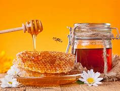

Ingredient Spotlight: Honey

Overview
Description: Honey is a sweet, viscous liquid produced by bees from the nectar of flowers.
Origin: Honey has been used by humans for thousands of years, dating back to ancient civilizations.
Nutritional Information
| Nutrient |
Amount per 100g |
| Calories |
304 |
| Fat |
0g |
| Carbohydrates |
82g |
| Protein |
0.3g |
Health Benefits:
- Contains antioxidants and has anti-inflammatory properties.
- May soothe sore throats and coughs.
Culinary Uses
Flavor Profile: Honey is sweet with floral notes, enhancing both sweet and savory dishes.
Cooking Methods: Used in baking, marinades, dressings, and as a sweetener.
Common Dishes:
- Honey glazed carrots
- Honey mustard dressing
- Honey-sweetened desserts
Storage and Preparation Tips
Storage Guidelines: Store in a cool, dry place; honey does not spoil.
Preparation Tips: Warm honey slightly to liquefy if it crystallizes.
Varieties and Substitutes
Types:
Substitutes:
Maple syrup or agave nectar can be used as substitutes.
Fun Facts and Trivia
- Honey never spoils; archaeologists have found pots of honey in ancient Egyptian tombs that are over 3,000 years old!
- There are over 300 varieties of honey in the United States alone.
FAQs
Q: Is honey vegan?
A: No, honey is produced by bees, so it is not considered vegan.
Q: Can I use honey in baking?
A: Yes, honey can be used in many baking recipes, but it may alter the moisture content.